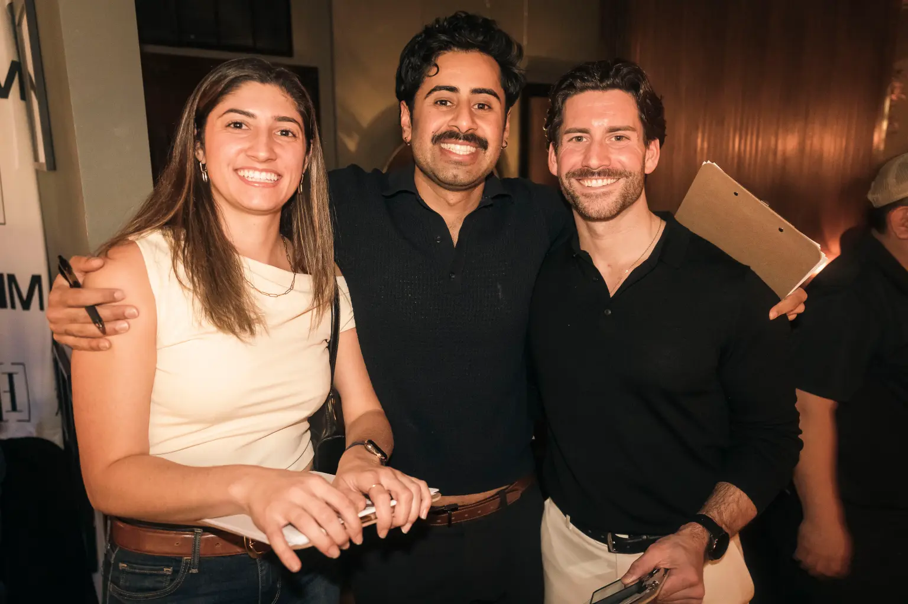
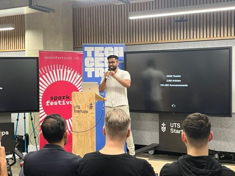

Events · NYC chapter co-host Unseen Connections Blindfolded dating events in New York. Guests are matched on a values survey and meet before they see each other. Read the New York Post storyNew York · Open to GTM strategy and operations roles
I was the founding go-to-market hire at Marloo and operated GTM at MotherDuck. Before that, I turned a New York rental business into a rental e-commerce platform. In Australia, I worked as a software engineer, a consultant and in structured finance.
01 — Projects

Events · NYC chapter co-host Unseen Connections Blindfolded dating events in New York. Guests are matched on a values survey and meet before they see each other. Read the New York Post story
Hackathon · First prize 2023 Spectral Product lead for an AI investment-research prototype that read company reports and social data to predict price moves. See the win02 — Work